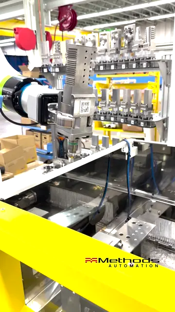
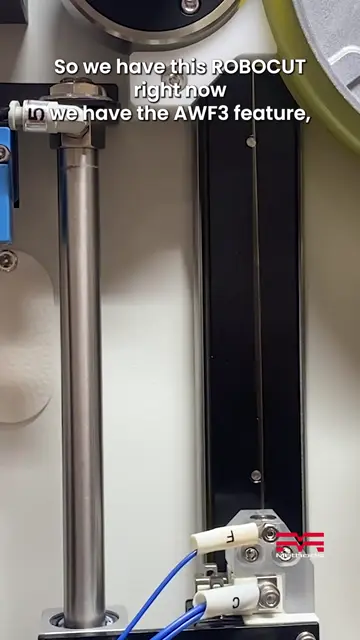
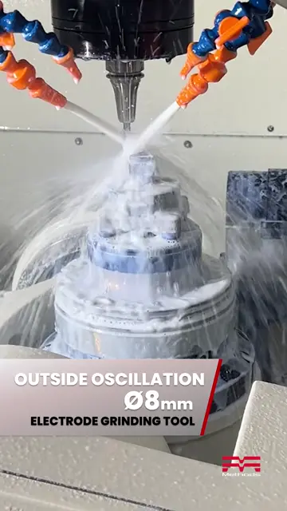
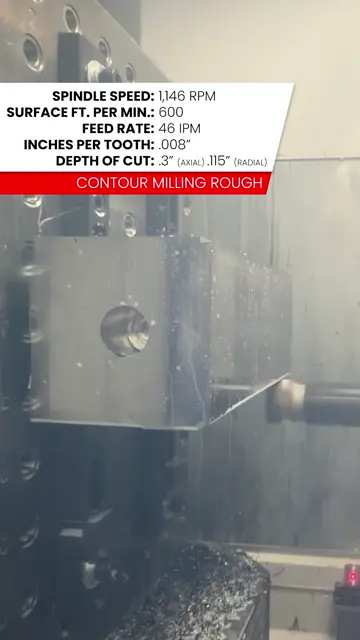
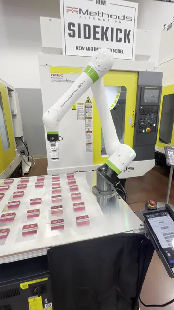
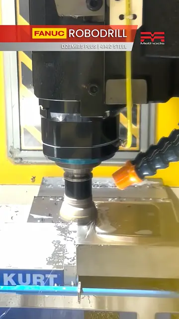

Josh Butz · CNC machine sales in Florida
Florida CNC Machine Sales
CNC machine sales across Florida. Based in New Smyrna Beach, Florida.
Machine lines
Machine lines Josh sells in Florida.
FANUC ROBODRILL
Compact vertical machining centers for high-speed milling, drilling and tapping.
View line →FANUC ROBOCUT
Wire EDM, with 10-second automatic wire threading for long unattended runs.
View line →
Nakamura-Tome
Multitasking turning centers and mill-turns.
View line →YASDA
High-precision machining centers, including 5-axis models.
View line →
OKK
Horizontal, vertical and 5-axis machining centers from Nidec OKK.
View line →KIWA
Horizontal and vertical machining centers, including two-pallet models.
View line →United Grinding
Grinding machines, including STUDER cylindrical grinders and Walter tool grinders.
View line →- Not sure which line?
Talk to Josh
Tell Josh about your part, material and volume, and he will help you find the right machine.
Get in touch →
Machines in action
Short clips of these machines at work. Tap to watch on YouTube.

FANUC ROBOCUTLights-out wire EDM automation
FANUC ROBOCUT10-second auto wire threading
YASDACutting cemented carbide, no edge chipping
KIWA KH4100kai45 lb 4140 manifold block, 2APC Nakamura-Tome JX-200Hobbing, skiving and multitasking
Nakamura-Tome JX-200Hobbing, skiving and multitasking OKK HM5100Three carbon steel cuts
OKK HM5100Three carbon steel cuts
FANUC RoboDrill + CRXThe Sidekick cobot cell
FANUC RoboDrillMilling 4140 with a 40 mm tool
Video: Methods Machine Tools
Follow Josh
Request a quote / talk to Josh
Tell Josh about your part, material and volume. Call or email directly.